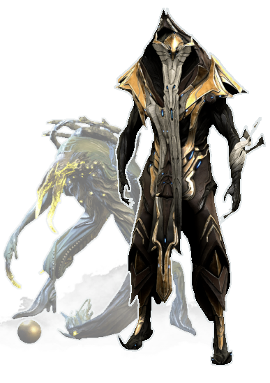
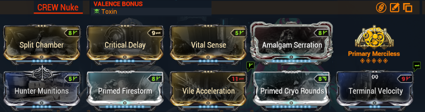

Specters

Specters are allied AIs that you can summon during missions to assist you.
Some are extremely useful and will greatly simplify the challenges of multiple game modes: it's worth preparing them in advance!
There are different types of specters:
- Tenno Specters
- Syndicate Specters
- Crewmates (On-Call)
- Ability Specters (Equinox, Wukong, Excalibur Umbra), which will not be covered here
Tenno Specters
There are 4 ranks of Tenno Specters:
- only one (1) can be summoned per player at a given time
- No power difference between those (it is determined by the current enemy level at summoning)
- Allows having 4 different specters/loadouts
- Lower rank specters are crafted in batches (x10 per craft for rank 1, 1 per craft for rank 4): configure lower ranks for the ones you'll play frequently
Limitations:
- Do not use all abilities
- Do not have mods equipped on the frame or weapons (BUT they benefit from Power Donation aura and Jade's power aura)
- Struggle with ammunition-based weapons (prefer battery-based weapons)
Blueprint Acquisition
- Complete capture missions at different levels
- Directly purchase base blueprints from Nightcap on Fortuna
Recommended Loadouts
Recommended Warframes
- Dante: protection, damage buffs, primarily the Overguard buff from Final Verse which continuously regenerates Overguard after killing enemies
- Wisp: health/speed regeneration
- Protea: health/energy/ammo regeneration, summons her dispensary
- Nidus: multiplicative power strength boost, applies his link upon summoning. Mostly used in high-level optimized static content (Defense, Arbitrations)
- Citrine: survival, applies her damage reduction. Stacks with other Citrines present
- Cyte: provides elemental ammo for weapons. Useful with the Ocuccor to maintain a single element permanently (the weapon recharges on each kill without changing magazine)
Recommended Weapons
- Primary: Shedu (battery, regular AoE stun)
- Secondary: Tenet Cycron (battery, innate fire procs)
- Melee: Mk1-Furax (tiny range, will favor other weapons)
Usage
- Craft your specters at the Foundry
- Equip your specters in your Arsenal's consumable wheel
- Use your specters via the consumable wheel in-game
Syndicate Specters
We will primarily focus on the Ancient Protector specter from New Loka: it redirects 90% of damage taken by allies, including defense objectives!
It also grants immunity to stagger and knocked downs for nearby allies.
Crewmate (On-Call)
Unlocked with the Railjack Command Intrinsic at rank 9.
Prefer rank 10 to get Elite crewmates with passive buffs further increasing their damage (preferred buff: 150% critical chance on primary weapons).
Recruited from Ticker on Fortuna or at the Pontis Tower (recruit Jarka Lar).
They must be equipped on the Railjack via a Dry Dock (dojo or Saturn/Pluto relay), upgrade their Combat and Endurance stats, and select them as "On-Call". Then remember to equip their shortcut in your own Arsenal's consumable wheel.
For weapons, prefer an AoE weapon with poor ammo economy (these specters have infinite ammo): the Kuva Zarr is the most common choice. Note: modding is particular as some mods do not work properly.
Zarr Mod Build
